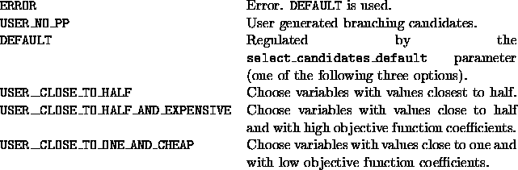

int user_select_candidates(void *user, double lpetol, int cutnum,
int slacks_in_matrix_num,
cut_data **slacks_in_matrix,
int slack_cut_num, cut_data **slack_cuts,
int varnum, var_desc **vars, double *x,
char *status, int *cand_num,
branch_obj ***candidates, int *action)
The purpose of this function is to generate branching candidates. Note
that *action from user_shall_we_branch() is passed on to
this function (but its value can be changed here, see notes at the
previous function), as well as the candidates in **candidates
and their number in *cand_num if there were any.
Violated cuts found among the slack cuts (not in the matrix) can be
added to the candidate list. These violated cuts will be added to the
LP relaxation regardless of the value of *action.
The branch_obj structure contains fields similar to the
cut_data data structure. Branching is
accomplished by imposing inequalities which divide the current
subproblem while cutting off the corresponding fractional solution.
Branching on cuts and variables is treated symmetrically and branching
on a variable can be thought of as imposing a constraint with a single
unit entry in the appropriate column. Following is a list of the
fields of the branch_obj data structure which must be set by
the user.
The position of the object in the appropriate array (which is one of vars, slacks_in_matrix, or slack_cuts.
Used only if the type is CANDIDATE_CUT_NOT_IN_MATRIX or VIOLATED_SLACK. In these cases this field holds the row extension corresponding to the cut. This structure can be filled out easily using a call to user_unpack_cuts().
The number of children of this branching object.
The description of the children. These arrays determine the sense, rhs, etc. for the cut to be imposed in each of the children. These are defined and used exactly as in the cut_data data structure. Note: If a limit is defined on the number of children by defining the MAX_CHILDREN_NUM macro to be a number (it is pre-defined to be 4 as a default), then these arrays will be statically defined to be the correct length and don't have to be allocated. This option is highly recommended. Otherwise, the user must allocate them to be of length child_num.
The activity level for the row (for branching cuts). This field is purely for the user's convenience. SYMPHONY doesn't use it so it need not be filled out.
The objective values, termination codes, number of iterations and feasibility stati of the children after pre-solving them. These are all filed out by SYMPHONY during strong branching. The user may access them in user_compare_candidates() (see below).
There are three default options (see below), each chooses a few variables (the number is determined by the candidate_num_for_strong_branching parameter) for strong branching.
Same as for user_shall_we_branch(), except that *action must be either USER__DO_BRANCH or USER__DO_NOT_BRANCH, and if branching is asked for, there must be a real candidate in the candidate list (not only VIOLATED_SLACKs and SLACK_TO_BE_DISCARDEDs).
